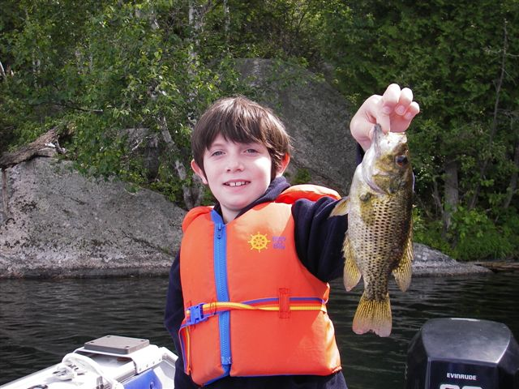
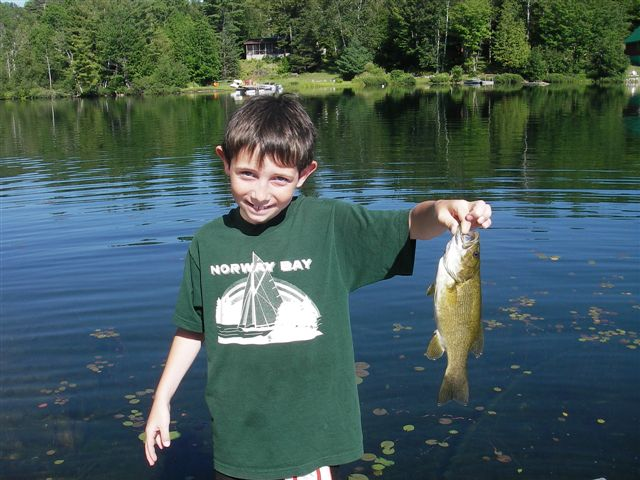
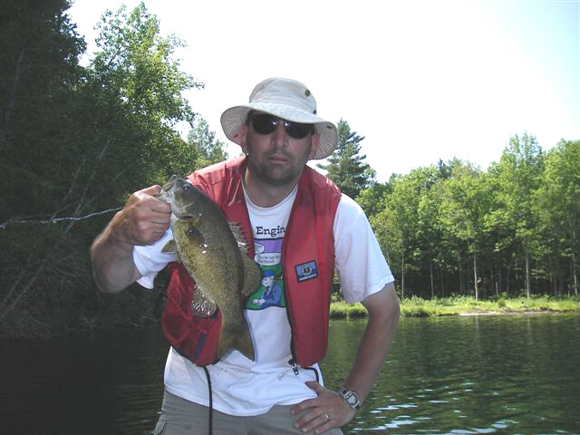
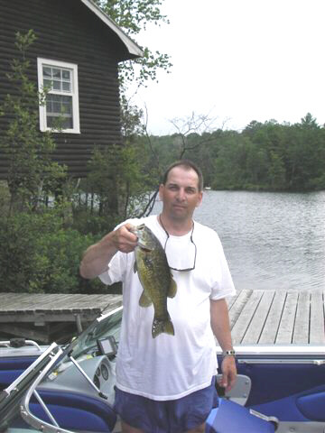
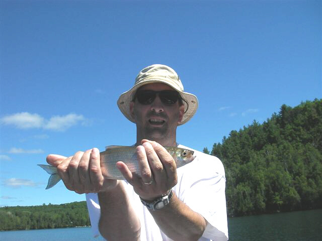
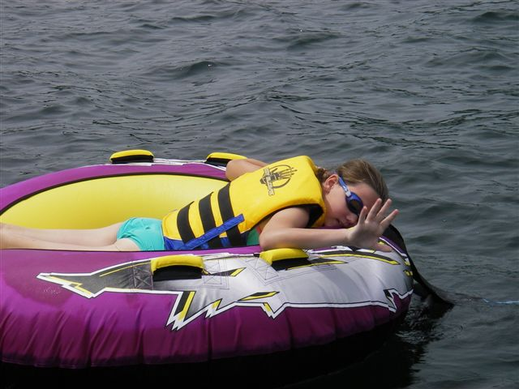
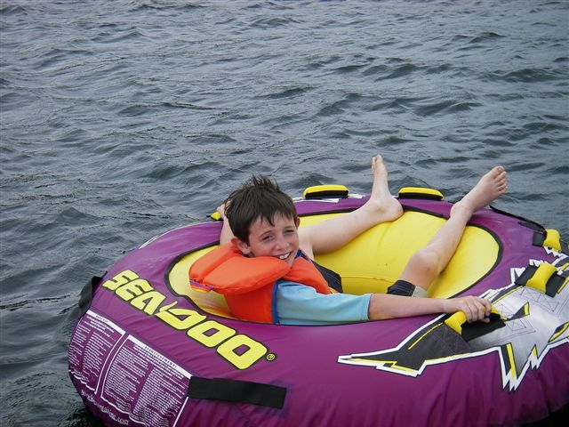
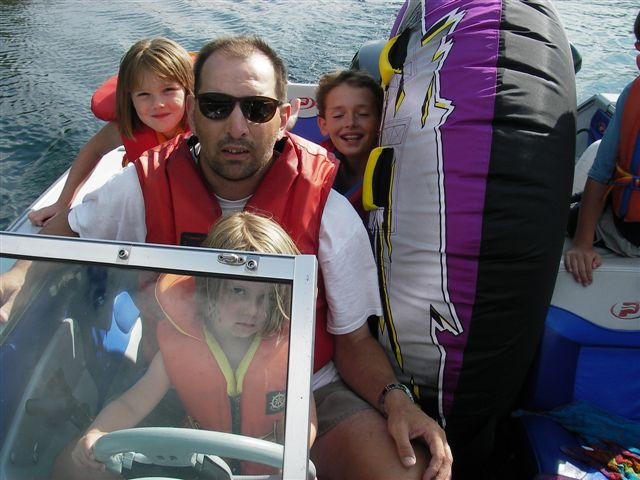

We rented a cottage for 3 weeks and I spent a couple of weeks there. The lake had pike, smallmouth, and laketrout plus an unlimited supply of rock bass. I fished for smallies most of the time but I put in my hours on the laker troll.
The big man with the killer rock bass. Caught these things every 10 seconds. Hooked up some nicer bass in between rockies too.


Many 2+ lb fish to be had.


Plus when trolling for lake trout (none were caught), I caught many of these nuisance Cisco things.

Rest of the time was trolling around this tube lure. You fill the tube with kids and then hope a huge fish takes the bait.


